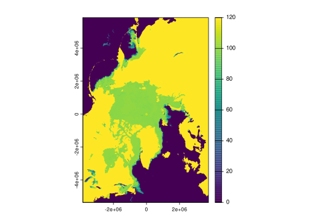

library(gdalraster)
library(stars)
library(terra)4 Working with HE5 Files for Sea Ice Data
This section demonstrates how to access and visualize sea ice concentration data stored in HE5 files, focusing on data from the AMSR-E/AMSR2 Unified L3 Daily 12.5 km dataset. We’ll use R along with the gdalraster, stars, terra, and sf packages.
Disclaimer
The code below is largely based/copied on the work of mdsumner.
file <- fs::path(
"data",
"AMSR_U2_L3_SeaIce12km_B04_20140314.he5"
)The code leverages the NetCDF interface to access subdatasets within the HE5 file. This allows us to access the geolocation arrays, which is crucial for proper spatial referencing.
sub <- paste0("NetCDF:", file, ":")
sds <- gdal_subdatasets(sub)
sf::gdal_utils("info", unlist(sds)[[30L]])Driver: netCDF/Network Common Data Format
Files: data/AMSR_U2_L3_SeaIce12km_B04_20140314.he5
Size is 608, 896
Metadata:
/HDFEOS INFORMATION/NC_GLOBAL#HDFEOSVersion=HDFEOS_5.1.15
/HDFEOS/GRIDS/NpPolarGrid12km/Data Fields/SI_12km_NH_ICECON_DAY#comment=data value meaning: 0 -- Open Water, 110 -- missing/not calculated, 120 -- Land
/HDFEOS/GRIDS/NpPolarGrid12km/Data Fields/SI_12km_NH_ICECON_DAY#coordinates=lon lat
/HDFEOS/GRIDS/NpPolarGrid12km/Data Fields/SI_12km_NH_ICECON_DAY#long_name=Sea ice concentration daily average
/HDFEOS/GRIDS/NpPolarGrid12km/Data Fields/SI_12km_NH_ICECON_DAY#units=percent
NC_GLOBAL#Conventions=CF-1.6
NC_GLOBAL#history=This version of the Sea Ice processing code contains updates provided by the science team on September 16, 2019. For details on these updates, see the release notes provided in the DAP.
NC_GLOBAL#institution=NASA's AMSR Science Investigator-led Processing System (SIPS)
NC_GLOBAL#references=Please cite these data as: Markus, T., J. C. Comiso, and W. N. Meier. 2018. AMSR-E/AMSR2 Unified L3 Daily 12.5 km Brightness Temperatures, Sea Ice Concentration, Motion & Snow Depth Polar Grids, Version 1. [Indicate subset used]. Boulder, Colorado USA. NASA National Snow and Ice Data Center Distributed Active Archive Center. doi: https://doi.org/10.5067/RA1MIJOYPK3P.
NC_GLOBAL#source=satellite observation
NC_GLOBAL#title=AMSR-E/AMSR2 Unified L3 Daily 12.5 km Brightness Temperatures, Sea Ice Concentration, Motion & Snow Depth Polar Grids
Geolocation:
SRS=GEOGCS["WGS 84",DATUM["WGS_1984",SPHEROID["WGS 84",6378137,298.257223563,AUTHORITY["EPSG","7030"]],AUTHORITY["EPSG","6326"]],PRIMEM["Greenwich",0,AUTHORITY["EPSG","8901"]],UNIT["degree",0.0174532925199433,AUTHORITY["EPSG","9122"]],AXIS["Latitude",NORTH],AXIS["Longitude",EAST],AUTHORITY["EPSG","4326"]]
X_DATASET=NETCDF:"data/AMSR_U2_L3_SeaIce12km_B04_20140314.he5":/HDFEOS/GRIDS/NpPolarGrid12km/lon
X_BAND=1
Y_DATASET=NETCDF:"data/AMSR_U2_L3_SeaIce12km_B04_20140314.he5":/HDFEOS/GRIDS/NpPolarGrid12km/lat
Y_BAND=1
PIXEL_OFFSET=0
PIXEL_STEP=1
LINE_OFFSET=0
LINE_STEP=1
GEOREFERENCING_CONVENTION=PIXEL_CENTER
Corner Coordinates:
Upper Left ( 0.0, 0.0)
Lower Left ( 0.0, 896.0)
Upper Right ( 608.0, 0.0)
Lower Right ( 608.0, 896.0)
Center ( 304.0, 448.0)
Band 1 Block=608x1 Type=Int32, ColorInterp=Undefined
Unit Type: percent
Metadata:
NETCDF_VARNAME=SI_12km_NH_ICECON_DAY
coordinates=lon lat
long_name=Sea ice concentration daily average
units=percent
comment=data value meaning: 0 -- Open Water, 110 -- missing/not calculated, 120 -- LandThe data needs to be transformed to a standard coordinate reference system (CRS). EPSG:3411 (NSIDC Sea Ice Polar Stereographic North) is commonly used for Northern Hemisphere sea ice data. The gdal_utils() function warps the data to this CRS and saves it to a temporary VRT (Virtual Raster) file. VRT files are useful because they act as a pointer to the original data without duplicating it, and allow for on-the-fly transformations.
dsn <- "/vsimem/temp.vrt"
sf::gdal_utils(
"warp",
unlist(sds)[[30L]],
dsn,
options = c("-t_srs", "EPSG:3411", "-overwrite")
)The rast() function from the terra package is used to read the VRT file and create a SpatRaster object. This object contains the sea ice concentration data, which can be visualized using the plot() function.
r <- rast(dsn)
plot(r)